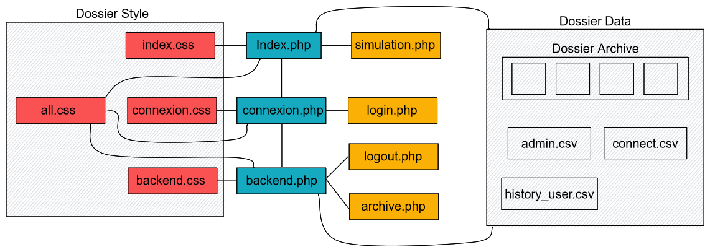

| Jules Delamare | Guillaume Froment | Minh Duc Bui | Mehdi Jdaini | Florian Sorin | Hugo Comte |
Ceci est un projet réalisé dans le cadre de notre seconde année de DUT à l'IUT de vélizy.
Ce site permet à tout utilisateur de simuler un prêt bancaire, plus précisément d’obtenir la somme à rembourser chaque mois en fonction du prêt total, du taux et du nombre de mois de remboursement voulu.
La structure du système est la suivante :

En bleu les fichiers PHP visuel
En jaune les fichiers PHP d'action
En rouge les fichiers de styles
L’index est une page visible accessible par tout le monde, il permet de faire la simulation du prêt bancaire en envoyant les données entrées par l’utilisateur par le biais d’un formulaire à simulation.php qui calcule le prêt puis en les récupérant pour afficher le résultat en temps réel. Un tableau de l’historique est également affiché en utilisant le fichier history_user.csv qui répertorie tous les calculs effectués par les utilisateurs.
Simulation.php n’est pas une page visible mais un fichier d’action. Quand lancé, ce fichier va calculer le remboursement mensuel en fonction des valeurs données. De plus, il enregistre les données dans les deux historiques. Les données sont enregistrées en haut du des fichiers de manière à toujours les voir dans l’ordre de simulation des plus récentes au moins récentes.
La page de connection permet à l’admin de se connecter, le mot de passe est le même pour tous les admins, et il doit être modifié directement dans le fichier connect.csv :
Backend.php est la page de visualisation de l’historique administrateur et des archives et de la gestion de ces derniers. L’historique peut être supprimé, ce qui supprimera aussi celui de l’utilisateur, ou alors archivé dans un nouveau fichier. Les archives sont listées et on peut les supprimer, les télécharger ou juste les visualiser. L’administrateur peut aussi revenir à l’index ou se déconnecter.
Archive.php est un fichier d’action qui se lance lorsqu’un historique est archivé ou supprimé ou lorsqu’une archive est supprimée.
L’archivage copie le contenue du fichier “admin.csv” et le met dans un nouveau fichier dans le dossier “data/archives/” sous un nom dépendant de l’heure de l’archive, de plus l'archivage supprime le contenu des fichiers “admin.csv” et “history_user.csv”.
La suppression va simplement retirer le contenu des fichiers “admin.csv” et “history_user.csv”.
La suppression d’une archive prend en argument le numéro de l’archive à supprimer, qui correspond à sa position dans la liste.
C’est via le dossier design que la page de connexion ou la simulation sera plus agréable visuellement pour l’utilisateur.
Ce dossier comprends plusieurs type de propriétés, comme margin/padding/border qui gère la position d’un contenu sur la page mais également font-family/color/background qui s’occupe de la mise en forme d’un texte et du site ou height/width qui gère la taille d’un objet (texte, image).
Ces propriétés sont contenues dans des “règles”, cela peut-être via des “div” ou des éléments plus généraux tels que “body” ou “head”.
De plus, nous avons ajouté des images pour la somptuosité (côté admin).
Dans le dossier Data, nous pouvons trouver toutes les données stockées par le site.
Elle consiste en :